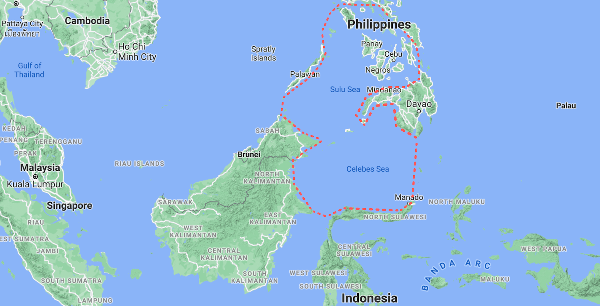

Currently 5% of our oceans are actively protected, by 2030 Conservation
International hopes that 30% of marine areas will be under protection.
The establishment of seascapes may just help shift current marine
economies into sustainable ‘blue’ economies.
Building blue economies—the ocean equivalent of a green economy—requires
an approach that integrates both ecosystem health and human health into
its management framework. Seascapes are multiple-use areas, which
include both marine protected ‘no-take’ areas (MPAs) or areas which are
heavily regulated to ensure sustainable resource use.
Regulatory frameworks surrounding seascapes are mainly guided by
scientific research, which involves close collaboration with other
sectors that generate their revenue from these areas. Seascapes are
funded by governments with territory in the area, private organizations
and other stakeholders, in order to conserve biodiversity, whilst
promoting human health.

Map of Sulu-Sulawesi. | Julia Riopelle / The Kingfisher
Shannon Murphy, seascape manager at Conservation International: ‘The
key to success lies in creating an environment where all of the moving
pieces including governments, local communities, funders and NGOs work
together to balance protection and production of ocean resources for
the health of the planet and its people.’
Conservation International is currently operating as a ‘backbone organization’
in five established seascapes: Sulu-Sulawesi Seascape (bordering northern
Indonesia, Malaysia and the Philippines), Bird’s Head Seascape (boarding
west Indonesia), Lau Seascape (bordering Fiji’s Lau Islands), The
Eastern Tropical Pacific Seascape (bordering Columbia, Ecuador and the
Galapagos Islands) and the Abrolhos-Trindade Seascape (bordering Brazil).
The role of a ‘backbone’ organization is to coordinate partners working
within the seascape. The seascape approach recommends that any future
established seascapes also have a reliable ‘backbone’ organization,
which is not a governing body, to offer neutral guidance. This is because
seascapes are often transboundary, crossing both national and international waters.
The Sulu-Sulawesi Seascape
The Sulu-Sulawesi seascape was established in 2005 and covers a 900,000
kilometers2 area which overlaps the coral triangle. Therefore, the
Sulu-Sulawesi is one of the most diverse and productive marine areas.
One million people rely on the seascape area for their livelihoods,
whilst a further 35,147,864 million people live within ten kilometers
of its coasts, thus deriving most of their food from it. The Sulu-Sulawesi
area has around 50 MPAs, which has seen a 79% increase in no-take areas
(no organisms or natural resources are removed from the area) since
prior to its establishment.
At the COP 10 conference in 2010, the involved parties (The Philippines,
Malaysia and Indonesia) collaborated on a series of
comprehensive action plans
for the Sulu-Sulawesi Seascape. The three
overarching conservation themes in the Sulu-Sulawesi are the conservation
of: (1) Threatened, Charismatic and Migratory Species, (2) Marine Protected
Areas and Networks, (3) Sustainable Fisheries.
A green sea turtle in Sipidan, Malaysian Borneo. | Jesse Schoff / Unsplash
How to establish a long-lasting seascape
Currently, the Sulu-Sulawesi Seascape has a total investment of $10 to 50
million. For a seascape to function in the long-term it needs both public
incentive and legislative support. Rules surrounding seascape areas must
therefore be integrated into the social and political frameworks of nations as well.
Governing bodies, educational and research institutions need to allocate
a certain budget to financially support multidisciplinary research into
effective seascape implementation, management and monitoring. To achieve
this, proper awareness and communication are also necessary, in order
to shift stakeholder thinking and investment from exploitative resource
use to sustainable practices.
All of the current seascapes—aside from Lau Seascape—which are monitored
by Conservation International, were established with the financial support
of a committed donor. This allowed the seascapes to be managed with a
certain flexibility, when planning regulatory frameworks, conducting
research and building further partnerships.
Surveys found that whilst a core donor may be successful in setting up
the seascape, it may create an uncertain dependency on that source of
funding. Thus, funding for seascapes should come from the public sector,
the private sector and revenues derived from the seascape itself (i.e.,
tourism, sustainable commercial fishing, any natural resource extraction, etc.)
‘For a seascape to function in the long-term it needs both public incentive and legislative support.’
Sulu-Sulawesi was successful in transforming its funding sources, from
a sole donor to multiple contributors. In 2005, the seascape was
established with 95% of its funding coming from philanthropic sources,
and only a 5% contribution from the Indonesian, Malaysian and Philippine
governments. However, after much public engagement and raising awareness
on the importance of protecting these areas, as well as the potential
revenues from tourism and sustainable fishing practices, funding sources
shifted over time.
Over a period of 13 years, the Sulu-Sulawesi Seascape built partnerships
with multiple bilateral and multilateral institutions, as well as increasing
government funding as well. In 2018, Sulu-Sulawesi received nearly 60%
of its funding from its bordering governments, around 12% from academic
institutions and around 20% from the public sector. What started out
to be 95% philanthropically driven, is now only contributing to 5% of
the total Sulu-Sulawesi funds.
The three governments need to continue to allocate a large budget to
the Sulu-Sulawesi seascape. Whilst donors, such as aid agencies,
international banks and large corporations, should also readily provide
funds in grants or loans to those who protect the environment, rather
than those who exploit it.
Shift in the sources of funding towards the Sulu-Sulawesi over 13 years| Murphy et al. / Conservation Science and Practice.
What is Line 5?
There are multiple ways in which the Sulu-Sulawesi seascape generates
revenue in order to support its own conservation efforts. User fees
are a large source of money, where individuals or commercial organizations
are charged a certain fee in order to enter the area. For example,
‘green fees’ are mandatory payments for scuba divers who want to explore
MPAs or tourists who want to enter Sulu-Sulawesi via boat.
Additionally, it is common practice to implement registration and
licensing fees for commercial fishers who wish to fish outside designated
MPAs but still within the borders of Sulu-Sulawesi. Usually licenses
are priced quite low, but it is important to increase them within
seascapes in order to be able to estimate the economic rent of the
fishing industry. By estimating the money earned which exceeds the
economically or socially necessary amount, one can control overfishing.
Seascapes should also only offer a maximum number of licenses in the
area, in order to further limit the parties who operate within them.
These can be allocated yearly, seasonally or monthly, to certain
industries, depending on the product they fish. However, these prices
and number of licenses need to be balanced against equity and poverty
alleviation objectives, as most of the local fishers are amongst the
poorest citizens. Licensing fees could thus be offered in larger
quantities and for slightly cheaper to rural and subsistence fisheries,
and in less numbers and higher prices to larger, commercial fishing entities.
Governments also need to increase taxes on products stemming from
unsustainable practices, in order to shift incentive for producers to
operate with sustainable practices or aquacultures instead. These may
also include pollution charges, as a compensation for the damage
unsustainable fishing practices cause to ‘the environment and society’.
Significant penalties and fines are also mandatory if any laws of the
Sulu-Sulawesi are broken.
If enough revenue is generated from the Sulu-Sulawesi, it will encourage
increased external investment from stakeholders, which would in turn
lead to a self-sustaining cycle of maintaining these areas.
Aquaculture in coastal area, Indonesia | Tom Fisk / Water Alternatives
A seascape that supports human health and livelihoods
The majority of commercial practices in these seascape areas should be
reserved for local industries, rather than international giants. If
the livelihoods of local, coastal communities are protected and
prioritized, it also increases incentive for them to recognize the
value of conserving their ecosystem services. Additionally, increasing
taxes on international products, as well as limiting seascape activity
to primarily locals, will reduce competition from international markets.
Partnerships with educational institutions and research centers are
also vital to encourage both marine and human health. Educational
programs in schools and field trips to the seascapes would forge an
interest and relationship in younger people—which should be exempt
from the tourism fee.
Additionally, the organizations working within the Sulu-Sulawesi should
provide a secure job market for young, national science graduates, in
order for them to work to conserve their own environment. This puts the
responsibility of nature conservation in the hands of its own locals,
rather than having for the most part, foreign researchers come in to
‘manage’ other people’s waters.
‘If the livelihoods of local communities are prioritized, it will
increase incentive to recognize the value of conserving their ecosystem services.’
The Sulu-Sulawesi is a leading example of a forward-thinking ocean
conservation strategy. Whilst areas of high marine biodiversity should
be prioritized, it is important to consider establishing seascapes
along major migration routes as well.
Along with the other five seascapes established by Conservation International,
other international organizations and nations should look to establish
their own seascapes along their coastlines. Multidisciplinary research
and cross-sectional collaboration is vital to conserve biodiversity and
ecosystems, whilst providing sustainable food and a stable livelihood
to its people.
Murphy S., Farmer G., Katy L. et al. (2021)
Fifteen years of lessons from the Seascape approach: A framework for
improving ocean management at scale. Conservation Science and Practice. Volume 3, Issue 6.
Srong-Wijnreder F. (2018) Conserving marine biodiversity in the Sulu-Sulawesi Seascape. Deutsche Gesellschaft für Internationale Zusammenarbeit (GIZ) GmbH.
Available at:
https://www.giz.de/en/worldwide/18229.html
[Accessed 23 June 2021]